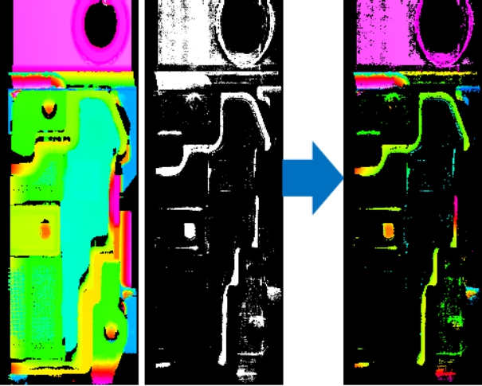

深度图像特征增强工具主要用来对输入深度图像以及像素映射后的灰度图像进行融合，过滤掉一些无用数据信息，凸显出特征信息。比如，提取胶线特征等。

| 分类 | 参数名称 | 参数描述 |
|---|---|---|
| 属性窗口 | 无 | 无 |
| 图像窗口 | 输入深度图像 | 显示待融合的深度图像。 |
| 数据链 | 输入深度图像 | 输入待变换的深度图像。 |
| 输入灰度图像 | 输入深度图像映射过后的灰度图像。 | |
| 高级界面 | 无 | 无 |
| 分类 | 参数名称 | 参数描述 |
|---|---|---|
| 监视窗口 | 输出深度图像 | 输出深度图像的长宽和像素大小，以及深度数据参数。 |
| 执行结果 | 工具执行结果。 | |
| 执行时间 | 工具执行时间。 | |
| 图像窗口 | 输出深度图像 | 显示工具执行结果图像，同监视窗口的输出深度图像参数。 |
| 执行结果 | 显示工具执行结果，执行成功显示“OK”，执行失败显示“NG”，同监视窗口的执行结果参数。 | |
| 数据链 | 输出深度图像 | 输出的融合之后的深度图像，供其他工具使用。 |
无
无
参见“\Samples\3D\深度图\深度图像特征增强工具.gvp”。